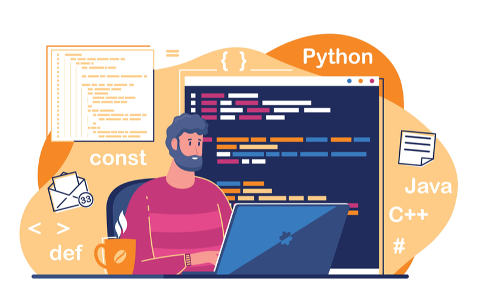

I excel at breaking down complex problems into manageable parts and finding efficient solutions. I try to solve problems gradually.
I pay close attention to code quality, accuracy, and documentation to produce reliable and maintainable software.
I am committed to staying up-to-date with evolving technologies and best practices, fostering a mindset of constant improvement.
My Knowledge
- C Programming
- C# Programming
- HTML
- CSS
- Microsoft Office
- Python
About Me
I'm a passionate developer with a diverse skill set. I specialize in C and C# programming, and I'm proficient in web technologies like HTML and CSS. With extensive experience in using Microsoft Office applications, I am skilled at creating documents and presentations.
Interesting Features
- Problem solver
- Quick learner
- Attention to detail